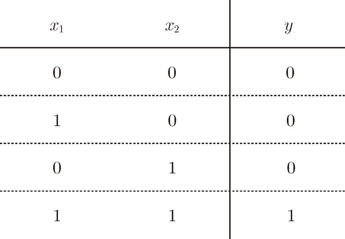
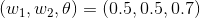
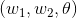
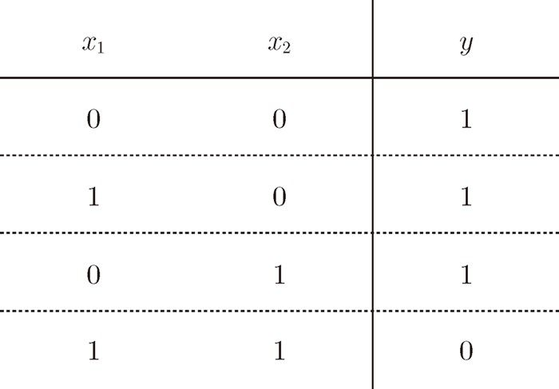
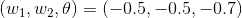
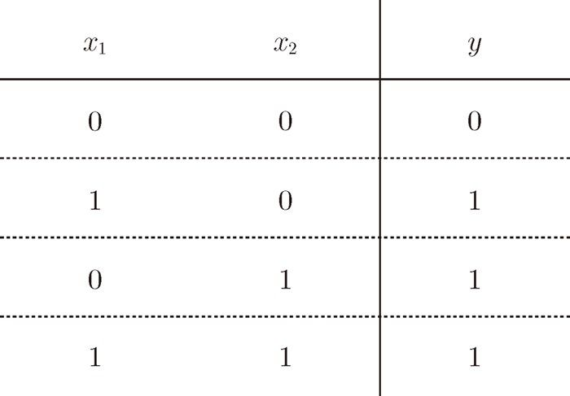

、
、 、θ 的值。那么，设定什么样的值才能制作出满足图 2-2 的条件的感知机呢？
、θ 的值。那么，设定什么样的值才能制作出满足图 2-2 的条件的感知机呢？现在让我们考虑用感知机来解决简单的问题。这里首先以逻辑电路为题材来思考一下与门（AND gate）。与门是有两个输入和一个输出的门电路。图 2-2 这种输入信号和输出信号的对应表称为“真值表”。如图 2-2 所示，与门仅在两个输入均为 1 时输出 1，其他时候则输出 0。

图 2-2 与门的真值表
下面考虑用感知机来表示这个与门。需要做的就是确定能满足图 2-2 的真值表的 、、θ 的值。那么，设定什么样的值才能制作出满足图 2-2 的条件的感知机呢？
实际上，满足图 2-2 的条件的参数的选择方法有无数多个。比如，当  时，可以满足图 2-2 的条件。此外，当  为 (0.5, 0.5, 0.8) 或者 (1.0, 1.0, 1.0) 时，同样也满足与门的条件。设定这样的参数后，仅当  和
和  同时为 1 时，信号的加权总和才会超过给定的阈值 θ。
同时为 1 时，信号的加权总和才会超过给定的阈值 θ。
接着，我们再来考虑一下与非门（NAND gate）。NAND 是 Not AND 的意思，与非门就是颠倒了与门的输出。用真值表表示的话，如图 2-3 所示，仅当 和 同时为 1 时输出 0，其他时候则输出 1。那么与非门的参数又可以是什么样的组合呢？

图 2-3 与非门的真值表
要表示与非门，可以用  这样的组合（其他的组合也是无限存在的）。实际上，只要把实现与门的参数值的符号取反，就可以实现与非门。
接下来看一下图 2-4 所示的或门。或门是“只要有一个输入信号是 1，输出就为 1”的逻辑电路。那么我们来思考一下，应该为这个或门设定什么样的参数呢？

图 2-4 或门的真值表
这里决定感知机参数的并不是计算机，而是我们人。我们看着真值表这种“训练数据”，人工考虑（想到）了参数的值。而机器学习的课题就是将这个决定参数值的工作交由计算机自动进行。学习是确定合适的参数的过程，而人要做的是思考感知机的构造（模型），并把训练数据交给计算机。
如上所示，我们已经知道使用感知机可以表示与门、与非门、或门的逻辑电路。这里重要的一点是：与门、与非门、或门的感知机构造是一样的。实际上，3 个门电路只有参数的值（权重和阈值）不同。也就是说，相同构造的感知机，只需通过适当地调整参数的值，就可以像“变色龙演员”表演不同的角色一样，变身为与门、与非门、或门。